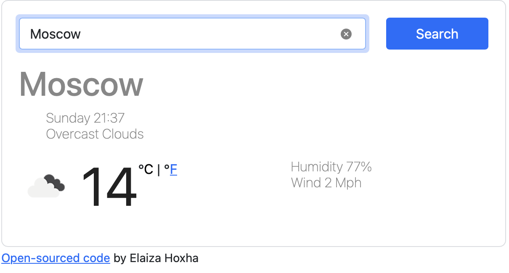
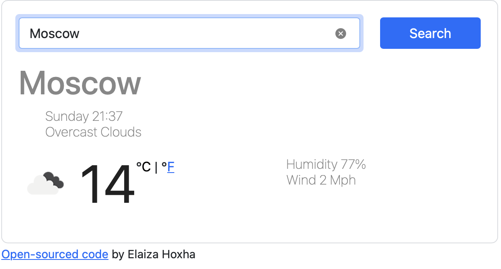

About Me

I’m an Informatics student at UW Seattle who enjoys working where strategy, design, and technology meet. I approach product work by asking the right questions early, mapping user journeys, and using data to prioritize what matters most. I’m comfortable collaborating across design, engineering, and stakeholders to guide ideas from discovery to delivery, always grounding decisions in user needs and measurable impact.


 
